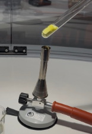
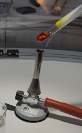
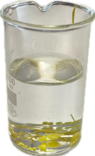
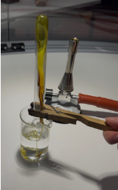

- Verbrennungslöffel
- Gasbrenner
- Reagenzglas
- Holzklemme
- Spatel
- Feuerzeug
- kleines Becherglas
- möglichst klates Wasser
Experiment: Modifikationen von Schwefel
Materialien
Chemikalien
- Schwefel

Schwefelpulver ist reizend

Beim Erhitzen entsteht giftiges Schwefeldioxid-Gas

Beim Erhitzen entsteht stark ätzendes Schwefeldioxid-Gas, welches schwere Verätzungen auf der Haut und schwere Augenschäden erzeugt
Schutzbrille, Schutzhandschuhe und Schutzkleidung tragen! Experiment im Abzug durchführen! Schwefel und Reagenzglas fachgerecht entsorgen.
Durchführung
Schwefelpulver wird ca. 3 cm hoch in das Reagenzglas eingefüllt und mithilfe der Holzklemme vorsichtig über der leuchtenden Flamme des Gasbrenners erhitzt.
Im Abzug durchführen! Beim Erhitzen entsteht giftiges Schwefeldioxid.
Der flüssige Schwefel wird vorsichtig aus dem Reagenzglas aus dem Reagenzglas in das Wasser geben.

CC BY-SA 4.0" data-source="Eigenes Bild" data-author="Mila B., Weronika J." data-title="Modifikation Durchführung 1">
CC BY-SA 4.0" data-source="Eigenes Bild" data-author="Mila B., Weronika J." data-title="Modifikation Durchführung 1">Beobachtung
1. Versuch:
- kleine Menge Schwefel
- nicht abgekühlt
- direkt ins Wasser
- Beobachtung: Perlenförmige, feste gelbe Kügelchen entstehen im Wasser
2. Versuch:
- mehr Schwefel (etwa 2 cm)
- nicht abgekühlt
- direkt ins Wasser
- Beobachtung: Perlenförmige, feste größere Kugeln entstehen im Wasser

CC BY-SA 4.0" data-source="Eigenes Bild" data-author="Mila B., Weronika J." data-title="Modifikation Beobachtung 1">
3. Versuch:
- viel Schwefel (etwa 4 cm)
- abkühlen lassen
- klebrige, zähe Masse, die langsam aus dem Reagenzglas fließt
- Im Wasser: Masse zieht Fäden, die nach kurzer Zeit fest werden (langsamer, als der nicht abgekühlte Schwefel)

CC BY-SA 4.0" data-source="Eigenes Bild" data-author="Mila B., Weronika J." data-title="Modifikation Beobachtung 2">Erklärung
Der gelblich-pulvrige Schwefel ist bei Raumtemperatur thermodynamisch am stabilsten. Es liegt in einem dicht gepackten Kristallgitter vor. Er ist in Wasser nicht löslich. Der sogenannte rhombische Schwefel geht beim Erwärmen zwischen 110 und 119 Grad Celsius in eine gelbe, leichtflüssige Schmelze über. Erhitzt man weiter, wird die Schmelze orangegelb, ab 159 Grad Celsius langsam dickflüssig und bildet bei 200 Grad eine dunkelbraune und harzartige Masse. Dabei lösen sich die stabilen Strukturen auf und bilden lange Ketten. Oberhalb von 250 Grad Celsius nimmt die Zähflüssigkeit ab. Gießt man den dünnflüssigen, gelben Schwefel in ein Glas mit kaltem Wasser, binden sich elastische Fäden oder eine gelbbraune, zähe Masse, die als plastischer Schwefel bezeichnet wird. Dieser wandelt sich allmählich wieder in den rhombischen Schwefel zurück.